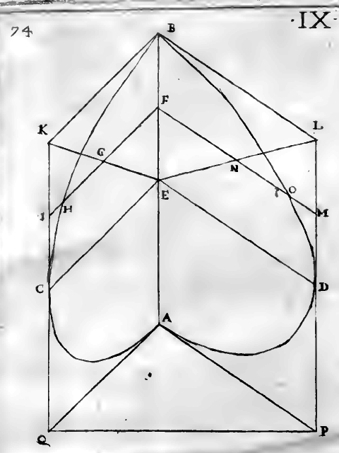

Propositio VII · Theorema VII (Vngula Cylindrica)¶


PROP. VII. THEOR. VII. (tab. 9. fig. 74, pp. 67–69)
Cylindri portio duabus semiellipsibus, vel semicirculis contenta, quarum communis sectio sit secunda diameter, vnà cum conuexa cylindri superficie inter easdem semisectiones conicas interiecta, subsesquialtera est cuiusdam ei circumscripti prismatis triangularis.
Intelligatur circumscriptum parallelepipedum, cuidam semicylindro, cuius oppositae bases sint semicirculi (in marg. tab. 9. fig. 74.); hoc autem vnà cum sibi inscripto semicylindro secetur transuersè plano aliquo, vt fiat in parallelepipedo sectio BKQA, at in semicylindro BCA, & recta BA sit communis sectio secantis plani, atque parallelogrammi per axem, iuxta quod semicylindrus existit; tum verò per BA planum aliud transeat abscindens vtrunque solidum, faciatque sectionem BLPA in parallelepipedo, & in semicylindro ipsam BDA. Dico, quod portio cylindri contenta duabus semicylindri sectionibus, seu semiellipsibus BCA, BDA, atque ea cylindri curua superficie inter easdem semisectiones conicas interiecta, subsesquialtera est sibi circumscripti solidi (prismatis nempe triangularis, vt ostendemus) contingentis inscriptam portionem in punctis B, A, & linea CD; sunt autem eius oppositae bases triangula AQP, KBL. Secetur BA bifariam in E, iunganturque CE, ED. Quoniam planum KLPQ contingit portionem cylindricam secundùm rectam CD, estque QK communis sectio planorum KLPQ, BKQA, erit KQ contingens sectionem BCA in C; verùm quia duo plana aequidistantia parallelepipedi, nempe KLPQ, & illud oppositum, in quo recta BA, secuimus plano AK, erit communis sectio QK contingens sectionem BCA in C aequidistans communi sectioni, vel secundae diametro BA; & ideò iuncta EC erit semidiameter coniugata ipsius BA. Similiter ostendemus LP contingentem sectionem BDA in D, aequidistantem esse eidem BA, proptereaque ED
f. 0085 · p. 68semidiametrum esse coniugatam eiusdem BA. Deinde quia KB, QA sunt communes sectiones plani secantis KA, duorumque aequidistantium triangulorum KBL, QAP (sunt enim partes duorum aequidistantium planorum parallelepipedi) & contingunt ipsa triangula cylindri portionem in punctis B, A; erunt duae rectae BK, AQ non tantùm parallelae inter se, verùm etiam contingentes sectionem BCA in punctis B, A; ex quo sequitur, quod dictae BK, AQ sint etiam aequidistantes eidem semidiametro CE. Pariterque eodem vsi ratiocinio ostendemus rectas BL, AP in ijsdem duobus punctis B, A sectionem BDA contingere, & esse inter se, & eidem semidiametro ED parallelas, quare spatia KA, BP erunt parallelogramma, & idcircò QK, PL erunt inter se parallelae, ac aequales, vtpote aequales vnitertiae BA, ex quo fit, vt spatium KP parallelogrammum sit; itaque circumscriptum solidum QBP prisma erit, cuius oppositae bases triangula sunt KBL, QAP. Extendamus insuper per rectam KL, & punctum E planum abscindens prisma, & ei inscriptam cylindri portionem, sitque prismatis sectio triangulum KEL; tum denique per quodlibet assumptum punctum F in linea BA planum aliud agamus aequidistans ipsi CDE secans pyramidem KBLE, & rursus vtrumque dictum solidum, sintque ductorum planorum sectiones GNF, IMF, HFO; & quoniam idem planum KA secat plana inter se parallela triangulorum QPA, CDE, IMF, KLB, erunt omnes communes sectiones QA, CE, IF, KB, inter se aequidistantes, itemque omnes AP, ED, FM, BL, pariterque QP, CD, IM, KL; quare, vt BE ad EF, ita KE ad EG, atque LE ad EN. Cum igitur duae istae postremae rationes similes sint, necesse est rectam GN aequidistantem esse ipsi KL. Praeterea quia (in marg. 21. primi conic.) quadratum ex CE ad quadratum ex HF est vt rectangulum AEB ad rectangulum AFB; & in eadem ratione est etiam quadratum ex ED ad quadratum ex FO; erit recta CE ad HF, vt ED ad FO; estque angulus HFO aequalis angulo CED (quod CE aequidistet ipsi HF, & ED ipsi FO) triangula igitur CED, HFO similia erunt, & propterea etiam latus HO parallelum erit ipsi CD, quod est latus cylindri, ex quo sequitur eandem HO rectam lineam esse, vtpote cylindri latus; Itaque cum HO parallela sit rectae CD, erit item parallela rectis IM, KL, & GN; atque hoc pacto triangula CED, IFM, KBL, GNF, & HOF similia sunt. His ostensis, quia quadratum CE,
f. 0086 · p. 69hoc est ipsum IF ad quadratum FH est, vt rectangulum AEB ad rectangulum AFB (in marg. ibidem.), erit per conuersionem rationis rectangulum AEB, hoc est quadratum EB ad quadratum EF, vt quadratum IF ad excessum sui ipsius supra quadratum HF; verùm, vt quadratum BE ad quadratum EF, ita quadratum KB, seu IF ad quadratum GF; quare vt quadratum IF ad dictum excessum, ita idem quadratum IF ad ipsum GF; & propterea quadratum GF aequale erit excessui quadrati IF supra quadratum HF; hoc est quadratum HF vnà cum quadrato GF aequale erit quadrato IF; Imò triangulum IFM prismatis CLE aequale erit triangulo GFN pyramidis KBLE vnà cum triangulo HFO semicylindricae portionis; pariterque triangulum CED eiusdem prismatis aequale erit triangulo semiportionis dictae CEDB, nempe sibi ipsi; cumque etiam triangulum KBL prismatis aequale sit triangulo pyramidis, hoc est sibi ipsi, erunt omnia triangula semiprismatis CLE aequalia omnibus triangulis dictae semiportionis cylindri vnà cum omnibus triangulis pyramidis KBLE: hoc est semiprisma CLE aequale erit semiportioni cylindri CEDB vnà cum pyramide KBLE, atque adeò totum prisma aequabitur toti portioni CADB vnà cum duplo dictae pyramidis; verùm duplum eiusdem pyramidis tertia pars est totius circumscripti prismatis, ergo duae reliquae tertiae partes eiusdem prismatis aequales erunt expositae portioni cylindri, & idcircò haec eadem subsesquialtera erit praedicti circumscripti prismatis QBP, quod &c.
COROLLARIVM I.
Ex vi huius demonstrationis patet, quod, si descripta illa cylindri portio secetur quolibet plano HFO aequidistante ipsi CED, vnumquodque segmentum ipsius, cuiusmodi est HFOB aequale est sibi circumscripto prismati IFL, dempto ex eo pyramidis frusto latente in eodem prismate: pariterque aliud segmentum reliquum aequatur sibi circumscripto prismati QAM, ablatis tamen pyramidibus KBLE, GNFE.
COROLLARIVM II.
Item constat triangulum compositum ex semidiametris coniugatis dictarum duarum semiellipsium, vel semicirculorum, vnà cum ea parte lateris cylindri inter easdem semidiametros interiecta, hoc est triangulum CED basi circumscripti prismatis aequale esse.